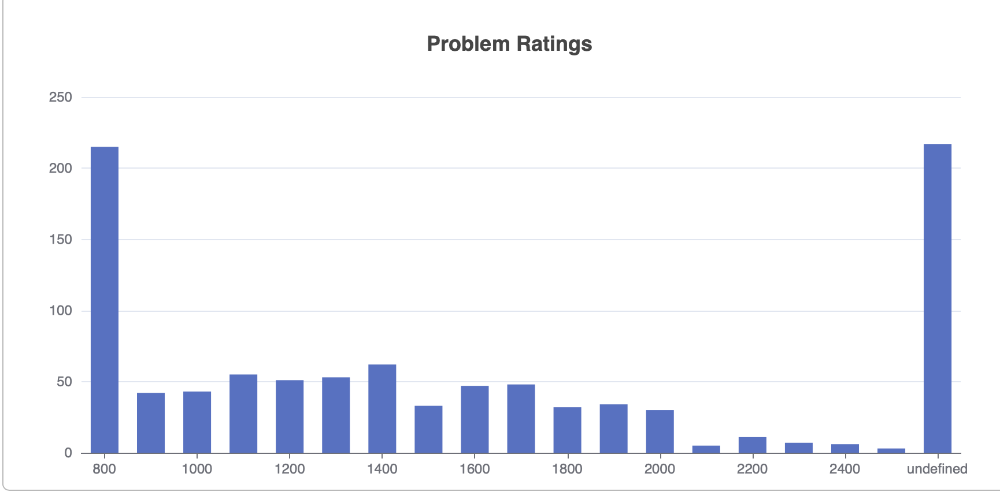

December 1st-15th
What I forgot to mention from last entry is that finals week happened. Thankfully most of the term is complete. Let’s just recap the two contests I did recently. Also, an end of year recap post on CodeForces will be out soon to describe this “journey”.
Educational Round 139
Problems Solved: A, B, C
New Rating: 1685 (-18)
Performance: 1628
The good part is that I may have broken my personal record of solving the first 3 problems in a division 2 level contest with an 18 minute completion. Problem C wasn’t even egrigiously easy and I ran through that like it was nothing. This is where the good part ends because Problem D was a mess. I had the right idea with using the difference of two numbers and creating a sieve of primes, but the sieve needed to extend to the whole 10000000 range rather than just sqrt(10000000), and there were several other observations missed that would have made my attempt run fast enough. I did reduce the unnecessary wrong submissions on this question, just that my conclusion from the first two wrong submissions that I needed to look for all of the factors in the difference was wrong as a whole.
Overall this contest went okay, but it could’ve been great and I unfortunately blew Problem D after a great start. At least it isn’t “Days of Our Programmers” bad.
Round 838
Problems Solved: A, B, C
New Rating: 1745 (+60)
Performance: 1899
I find it funny that the contest narrative for this round is nearly identical to the previous round, yet the elo change differs by 78 points. The difference here is that Problems C and D were significantly harder so a fast 3 question solve resulted in a higher rank. Problem C itself was actually not that difficult aside from it being a reading hell. Once you draw out the problem then the solution is very simple. Unlike last time, I did not complete a working solution on Problem D, there is an idea I have that works in theory, but my implementation of it likely was problematic.
(This post will be updated once I figure out if my original idea on D was right or not.)
Update: My attempt at D
Looking back at Problem D, the method I seemed to use was creating a “cycle” of the n hidden values and checking the gcd between each adjacent pair. Each value will then have 2 gcd values assigned to it (due to having 2 neighbours in the cycle setup), and if the maximum of these values is 1, it can be eliminated as not being the zero. This is because if it was, then the only way both gcd’s are 1 are if the value to its left and right are 1, which is impossible. In addition, values that have both of their gcd values the same can also be eliminated. A new cycle is formed with the remaining values, and the process repeats, except the minimum gcd value for elimination is now 2, then 3, and so on until 2 values in the cycle remain. The issue seems to be that this method requires too many guesses; I used a fail safe line to check if this was the case by having the algorithm guess the first two values remaining in the cycle if no more guesses were needed, and this ended up in a wrong answer.
To those still here, this update was actually posted December 25th since the past week or so has been covered by the last bit of my school term and several days of much needed rest. Merry Christmas, Happy Holidays, or happy New Year’s Eve’s Eve’s Eve’s Eve’s Eve’s Eve if that’s your thing.
December 16th-31st
The last log of 2022. I am thankful that I made it through whatever was the madness that was my school term this year, but this journal is not really meant for me ranting. I had 3 more contests to try and climb 255 ELO to end at CM for 2022. It’s a near impossible task, but I can still give it my best shot.
Polynomial Round 2022
This is a special case where I have to hide the general stats until the end of this contest recap, because this truly was the contest of the year. Shame this wasn’t the finale.
This contest began with a solve on Problem A and B in 7 minutes, a new personal best. Problem B in particular was a question I did especially well on to solve quickly; in fairness, the code for it was incredibly simple:
# input helper functions not included below, self-explanatory what readint/ints/ar do
for i in range(readint()):
n,m,k = readints()
ar = readar()
x = n//k
if n % k != 0: x += 1
if max(ar) > x: print("NO")
else: print("YES")It pretty much was a matter of making sure there was not too much paint of a single colour with a maximum function. Very simple stuff really.
Problem C is a basic dp problem which is observed by the requirement to give the number of players that can win for every prefix of the binary string. The info given is only a binary string and it can be up to 200000 bits long, so there should be a basic O(1) dp to find each value. In this case there is by tracking how many consecutive 0’s or 1’s are there so far from the current bit. Trying the problem over smaller testcases led to an Accepted verdict at 20 minutes, meaning I’m still on my best ever pace.
Problem D is where my pace begins slowing down due to the problem difficulty, even though it was also worth 1500 points like C. Checking if the problem is possible is simple by counting the total number of 1’s and seeing if it is divisible by the number of rows. By also tracking how many 1’s each row has it is possible to track which rows have too many 1’s or too few 1’s and swap accordingly. In my setup I arranged the rows from most to least 1’s for easier tracking. To top it all off, there will always be a possible case where 1 row has a 1 in a position where another has a 0 if the rows have differing numbers of 1’s, so swaps are always possible. With proper checking the runtime is effectively O(n log n) for sorting the rows plus O(nm) since each value in the 2d array only needs to be checked once at most.
This was the last problem I solved on this contest but a special mention should be given to my attempt on Problem E. I made some notes on my fixed solution after the contest here (note that the answer should be a+b’,b+a’, no min clause is needed). The submission in the contest had the same idea except there was a miscalculation in the eval function determining the steps needed (it’s not just depth of each node times 2), and the updated solution is correct, just really badly implemented to the point that the time limit becomes an issue. This would normally be the end of the contest.
My extended discussion on Problem B was foreshadowing this successful hack partially by me rushing through the first few problems, partially by very good observation, and partially by hilariously weak pre-tests. It turns out my code fails the following idea:
1
10 3 3
4 4 2In this case a setup like 4 3 3 would be needed. Somehow, I actually figured out the error pretty quickly, being that if x is the maximum amount of one paint colour allowed, the colouring is impossible if there is more than x of a single colour OR there are more than n % k colours with exactly x amount (n being number of tiles to colour, k being # of consecutive tiles with no repeats). To top it all off, Problem B ended up becoming a System Test Armageddon so the hack on my first solution ironically saved me in a sense; had it not happened, I would have almost certainly gotten 0 points on B from a failed main test.
This really was a contest. That’s all I can say. It had everything from a “clean” start to solving more complex problems to myself actually not being entirely screwed on the later problems to a crucial hack in the final moments. Such an incredible contest hereby is awarded 2022’s CodeForces Contest of the Year (It will be formally awarded in an actual Codeforces post recapping this entire year).
Problems Solved: A, B, C, D, B
New Rating: 1772 (+27)
Performance: 1841
On another note, I may as well note my CodeForces Contest of the Year in 2023, 2024 and 2025, ie. the contests I found were of the greatest impact and significance for me either by actually good problem design or just overall chaos.
2023
This is a joint award between CodeForces Round 858 and Educational CodeForces Round 145. It just happens that both of these contests together provide both the insane highs and lows of competitive programming ability from me. Once the March 2023 archive post is up, it will explain why. This also happened the after February 2023 in which my first Division 1 ICPC competition occurred (the previous was Division 2), so to bottom out to practically an all time low and then reach a high I quite literally have never matched since makes this pair very deserving.
2024
Round 975 (Div. 1) was not just a well designed competition, but also the main contest I go to when showing that rating does not mean everything. To this day, this is the only solo Division 1 contest I have solved at least 3 problems. The actuality is that I solved 4 problems, and even if they were somewhat easier in rating (B was 1900 and C was 1700), Problem D was a 2200 rated problem, which is well in the upper range of difficulty of what I’ve even solved.

Somehow despite all this, I (hilariously) lost 7 ELO going from 2201 to 2194. But given how Divison 1 contests had been a wall for me previously with rank gains only occurring mostly due to luck and solving the easy problems faster, this case where I showed I can actually compete legitamitely in Division 1 was quite important.
There is also a notable (unsure if honourable) mention to Meta Hacker Cup 2024 Round 2 here, mainly due to problem A2. I may or may not have wrote a rant on this problem due to how much more beautiful the solution can be when monkey brute force is not used.
2025
There were fewer contests I took part in this year mainly since I truly thought the ICPC dream was over during the first half of the year and had shifted my attention to career preparation, leaving competitive programming more as a side hobby of sorts. Then UBC happened and I found that I still had one more shot. Admittedly, there was also the issue that even now I find myself increasingly inconsistent in that my ability seems to peak and dip cyclically. Even as of writing this I’ve gone under 1900 ELO again. But the important thing is that I know and can at least show at times I am capable of big performances, and it just happened during the UBC team tryouts that’s when I started kicking it in again. But to say this was a fluke would be incorrect since this was also when Meta Hacker Cup 2025 Round 1 occurred, where I secured a very strong placing (roughly around top 1000) to qualify for the next round (which didn’t go as well, but in fairness, that was on the same day as ICPC Pacific Northwest Regionals 2025), but for the purposes of this award, CodeForces Round 1061 (Div 2.), or as I call it, the only other International Grand Master level performance I’ve had in a contest. This also happens to be the closest I’ve been to replicating the Educational Round 145 run. The contest itself also has some very high quality problems that created an interesting spread overall as well, and is one of my best demonstrations of both speed and depth of problem solving.
Round 841
Problems Solved: A, B, D
New Rating: 1763 (-9)
Performance: 1735
Problems C and D were both worth 1500 points in this contest which explains how I solved D but not C and that both problems had a similar number of clears. This contest also happens to be one of the best I have performed on from a strategic standpoint. My progress on C pretty much amounted to “find the subarrays with an xor value that is a square number”; past that I had not much. There are only about 512 possible square number values the subarrays could have, so technically iterating through each one with a linear time algorithm would result in about 100 million operations which is just barely possible for Python. The issue is that I have no clue what the linear time algorithm is. Hint 3 states that using prefix XOR is part of the solution which will be something for me to look at.
Problem D requires finding a minimum value across a range of values in a 2d grid, and was actually pretty simple for me. It involves modifying a sparse table to be used for the 2d grid, which allows min value lookups in O(1) time. This means any size L can be tested in at worst O(nm) time, so combining with a binary search to find the largest possible L, this results in O(mn log(n)) time, assuming n < m. (If m < n, then it would be log(m)). I started this problem after about 10 minutes of attempting C, and this resulted in a best case scenario. I’m unsure how I still lost rating from this, but I played up to potential and didn’t shoot myself in the foot. I’ll call this a good contest.
There is one last contest for 2022 as tradition:
Good Bye 2022
Problems Solved: A, B, C
New Rating: 1805 (+42)
Performance: 1913
I may not have reached CM after this contest, but it at least is a good note to end 2022 on. Like the last few months it wasn’t perfect, but overall was a solid run. I had a wrong submission on both Problem B and C, but unlike past contests, it was only one wrong submission each and I still had quick solves overall. Problem D had some progress but I did have an error in determining if a configuration existed. There wasn’t any real choke in implementation or gimmick involved, I simply struggled with determining how D’s solution worked. I’m not too disappointed though since I got A through C quickly and in previous months there was a case where I choked C. In all this was a solid end to 2022. A full recap on Codeforces will be out soon. See you all in 2023, where I will be aiming much higher. At the moment maybe around IM.